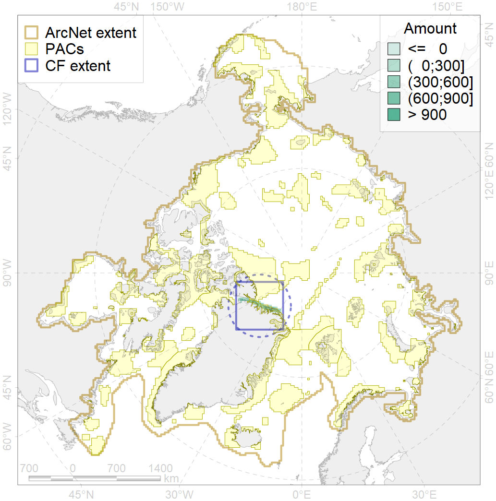
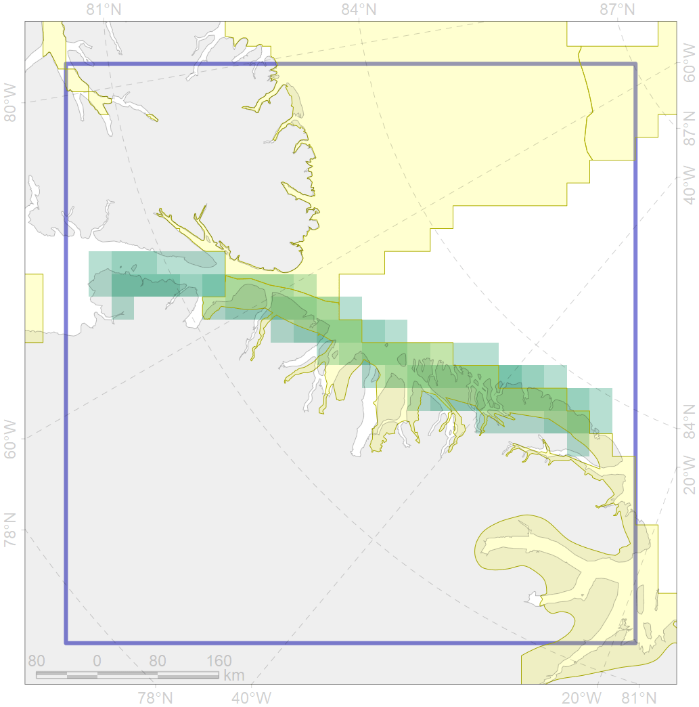

9020

| CF code | 9020 |
| CF name | polar bear denning areas of AB (Arctic Basin) subpopulation distribution |
| Time Period | prior to 2008 |
| Source(s) | Born, 2008 |
| Seasonality | Oct-Apr |
| Depth Horizon | 0 |
| Methodology | Field data, expert opinion, simulation results. |
| Use Restrictions | Open access |
| Author Name | Evgeniya Melikhova, Stanislav Belikov |
| Notes | |
| Scenario’s Target | 0.528 |
| Target Achievement | 0.743 (Scenario: 140.8%) |
| PAC | Share of the Total Amount within the PAC | Share of the Target Achievement for the ArcNet | PAC’s Contribution to the Target Achievement |
|---|---|---|---|
| 33 | 63.6%73.8% | 119.3%138.5% | 84.7%98.4% |
| 54 | 3.4%12.5% | 6.3%22.4% | 4.4%15.9% |
| inner | 67.0%86.3% | 125.5%160.9% | 89.2%114.3% |
| outer | 33.0%54.4% | 15.3%55.8% | 10.8%39.6% |
| † supplement values are for area consistence whereas principal values are for Accenter compatible gridded stats |